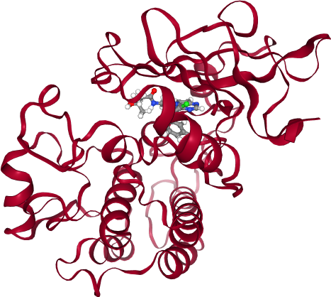
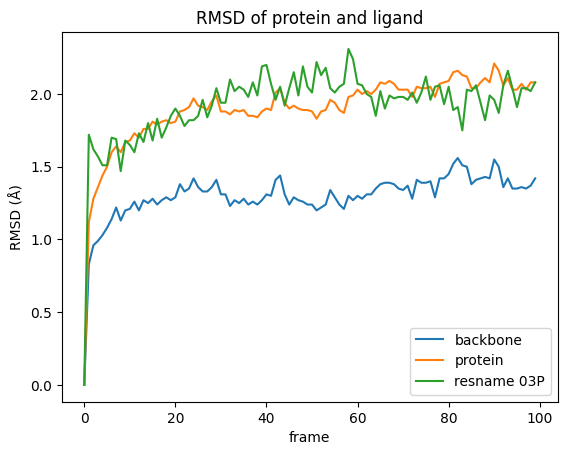
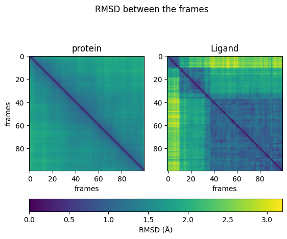
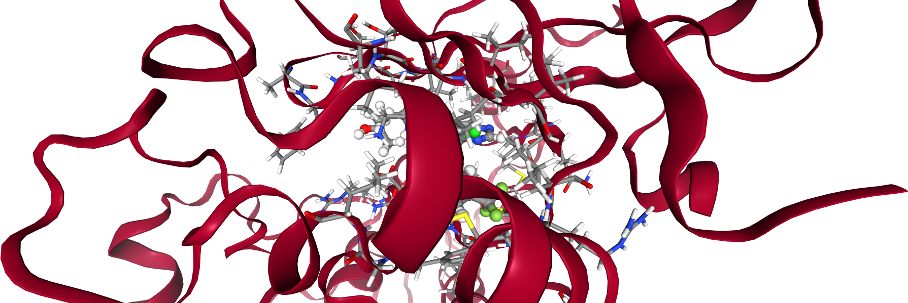
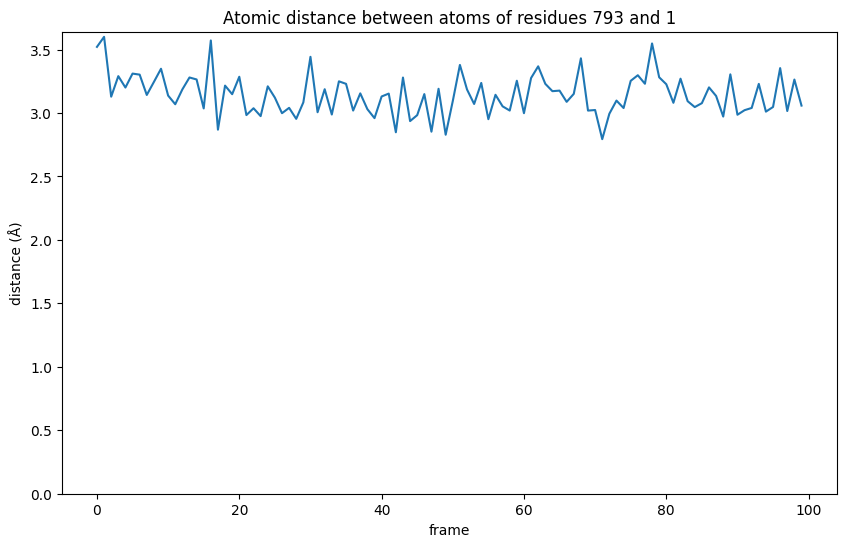
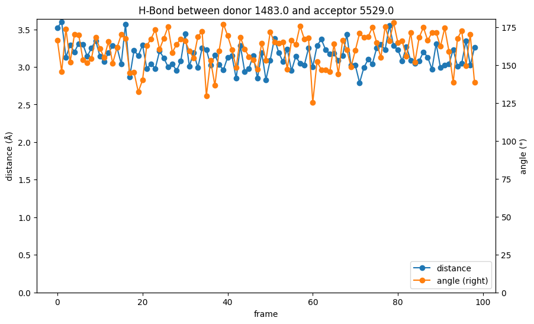

T020 · 分子动力学模拟分析¶
注： 本教程是 TeachOpenCADD 的一部分。TeachOpenCADD 是一个旨在教授领域专用技能，并提供可作为研究项目起点的流程模板的平台。
作者：
Franziska Fritz, CADD 研讨课 2018, Charité/FU Berlin
Fiorella Ruggiu, 2019, Volkamer 实验室, Charité
Jaime Rodríguez-Guerra, 2020, Volkamer 实验室, Charité
Talia B. Kimber, 2021, Volkamer 实验室, Charité
Dominique Sydow, 2021, Volkamer 实验室, Charité
本教程的目标¶
在本教程中，我们将介绍分子动力学（MD）模拟的分析方法。所介绍的方法包括动画可视化、结构比对（alignment）、均方根偏差（RMSD）计算以及相互作用分析（特定原子间距离和氢键模式）。
本教程中分析的 MD 模拟使用的是 教程 T019 中的模拟。
理论 部分内容¶
MD 模拟
在药物发现过程中的应用
柔性 vs. 静态结构
分析 MD 模拟
可视化
RMSD
氢键分析
实践 部分内容¶
加载并可视化系统
比对（Alignment）
蛋白质和配体的 RMSD
RMSD 随时间变化
帧间 RMSD
相互作用分析
原子距离
氢键分析
参考文献¶
理论背景：
MD 模拟在药物发现中影响的综述（J Med Chem (2016), 59(9), 4035-4061）
关于 MD 模拟的综述文章（Living J Comp Mol Sci (2019), 1(1), 5959）
MD 模拟分析教程（Living J Comp Mol Sci (2019), 1(1), 10336）
RMSD 计算（Wiley Interdiscip Rev Comput Mol Sci (2011), 1(5), 826-843）
软件：
MDAnalysis（MDAnalysis）
MDTraj（MDTraj）
[38]:
import sys
if "google.colab" in sys.modules:
%pip install teachopencadd --no-deps -q
!teachopencadd -d 20
%pip uninstall teachopencadd -y -q
%pip install -qr requirements.txt
理论¶
MD 模拟¶
在药物发现过程中的应用¶
在过去的几十年里，对基于结构的药物设计的兴趣日益增长。采用 GPU 加速的更快速算法和架构的发展，使得模拟生物分子的长度和时间尺度不断增加。MD 模拟在药物发现中的应用包括：
通过提供配体结合前的自由态（apo）和结合后的结合态（holo）构象，考虑蛋白质的柔性。
MD 模拟可用于细化对接结果，例如通过考虑侧链在结合过程中的灵活性对对接姿势进行评分。
生成构象系综以用于虚拟筛选方法。
研究结合/去结合动力学。
解决由于结晶条件导致结构中缺失的环区。
柔性 vs. 静态结构¶
蛋白质-配体复合物的静态模型（如 X 射线结构）允许评估先导候选物的结合模式，这可用于系统性地提出基于结构的修饰建议，以优化结合。然而，这个过程依赖于由单个静态结构推导出的信息。但蛋白质是动态的实体，其侧链和环区在溶液中不断运动。此外，结合事件本身可能由构象选择或诱导契合驱动。MD 模拟可以用来探索这些其他可能的构象状态。
分析 MD 模拟¶
由于本教程旨在作为 MD 模拟分析的入门介绍，我们将执行基本的分析步骤，以初步了解该领域。
在本教程中描述的分析结果可以用于：
验证模拟是否稳定（在 RMSD 到达平台期时，表明系统已平衡）。
分析蛋白质配体相互作用的时间演变（哪些相互作用是持久的？）。
评估配体的结合姿势（结合模式是否发生变化？）。
可视化¶
包含 MD 模拟的 ensemble 可以整体可视化，通常包括动画。它们允许观察构象变化、波动和结合/去结合事件。通过可视化，科学家已经可以很好地了解模拟和系统在模拟过程中的稳定性。
在本教程中，可视化将使用 NGLView 小部件进行。有关 NGLView 的更多信息，请参阅 教程 T017。
RMSD¶
追踪构象变化的一种更复杂的方法是计算均方根偏差（RMSD，Wikipedia）。RMSD 衡量一组原子在特定时间点的位置与参考构象（例如模拟的第一个帧）相比的平均偏差。该量度用于评估模拟中系统的稳定性（初始陡峭上升，然后是达到平衡时的平台期）以及蛋白质柔性。
氢键分析¶
非共价相互作用如氢键是配体-蛋白质复合物形成的关键因素（PLoS One. (2010), 5(8), e12029）。当供体和受体原子处于一定的距离和角度阈值内时，就会形成氢键。
在本教程中，我们将使用 MDAnalysis 的 Wakasugi Hydrogen Bond Analysis 来研究氢键的形成。
实践¶
接下来，我们将加载一个 MD 模拟并分析配体和蛋白质随时间的变化。
我们分析的 MD 模拟是在 教程 T019 中执行的模拟，其中 EGFR 激酶域（PDB：3W32）与配体共结晶，在水中进行模拟。
[39]:
from pathlib import Path
import pandas as pd
import numpy as np
import matplotlib.pyplot as plt
import nglview as nv
import MDAnalysis as mda
from MDAnalysis.analysis import rms, diffusionmap, align
from MDAnalysis.analysis.distances import dist
from MDAnalysis.analysis.hydrogenbonds.hbond_analysis import HydrogenBondAnalysis as HBA
[40]:
HERE = Path(_dh[-1])
DATA = HERE / "data"
加载并可视化系统¶
第一步，我们加载拓扑（.pdb）和轨迹（.xtc）文件，以创建一个代表模拟系统的 MDAnalysis universe。 该 universe 配备了 NGLView 的包装器（wrapper），可以立即显示轨迹并播放动画。
注意，在静态 HTML 渲染中，动画将不会/无法播放。如果你正在静态页面上阅读此内容，请确保在本地的 Jupyter 中打开此 notebook。
[41]:
md_universe = mda.Universe(str(DATA / "topology.pdb"), str(DATA / "trajectory.xtc"))
view = nv.show_mdanalysis(md_universe)
view
[42]:
view.render_image(trim=True, factor=2, transparent=True);
[72]:
view._display_image()
[72]:

比对（Alignment）¶
尽管在这个较短的轨迹的可视化中几乎注意不到，但根据所使用的模拟包/设置，蛋白质在模拟过程中可能发生旋转和平移。为了消除蛋白质的整体运动，通常在 RMSD 计算之前执行比对。使用根均方偏差最小化的最小二乘拟合法，我们将轨迹叠加到参考结构的骨架原子上。
注意：在实际操作中，MD 分析库（如 MDAnalysis）会在 RMSD 计算期间自动执行比对。我们可以简单地设置 AlignTraj 参数并使用 run 方法执行：
[44]:
# 将轨迹指针设置为参考的第一帧
md_universe.trajectory[0]
# 需要 in_memory=True 来实际修改加载的轨迹
# 如果轨迹太大无法放入内存，可以将比对后的轨迹写出并重新加载到新的 universe 中
alignment = align.AlignTraj(
mobile=md_universe, reference=md_universe, select="protein", in_memory=True
)
alignment.run()
[44]:
<MDAnalysis.analysis.align.AlignTraj at 0x120123530>
[45]:
view = nv.show_mdanalysis(md_universe)
view
[46]:
view.render_image(trim=True, factor=2, transparent=True);
[73]:
view._display_image()
[73]:

蛋白质和配体的 RMSD¶
在动画中，蛋白质和配体是清晰可辨的。然而，很难评估配体或蛋白质是否实际上显著改变了它们的位置/构象。RMSD 是一种可以用数学方法评估这一点的度量。
[48]:
ligand_name = "03P"
RMSD 随时间变化¶
为了绘制 RMSD，我们编写一个函数，该函数计算所选原子组相对于参考结构（本示例为第一帧）的 RMSD，并返回一个 pandas DataFrame。
[49]:
def rmsd_for_atomgroups(universe, selection1, selection2=None):
"""计算选定原子组的 RMSD。
Parameters
----------
universe: MDAnalysis.core.universe.Universe
MDAnalysis universe。
selection1: str
Selection string for main atom group, also used during alignment.
selection2: list of str, optional
Selection strings for additional atom groups.
Returns
-------
rmsd_df: pandas.core.frame.DataFrame
DataFrame containing RMSD of the selected atom groups over time.
"""
universe.trajectory[0]
ref = universe
rmsd_analysis = rms.RMSD(universe, ref, select=selection1, groupselections=selection2)
rmsd_analysis.run()
columns = [selection1, *selection2] if selection2 else [selection1]
rmsd_df = pd.DataFrame(np.round(rmsd_analysis.results.rmsd[:, 2:], 2), columns=columns)
rmsd_df.index.name = "frame"
return rmsd_df
运行该函数，计算模拟过程中所选分子的 RMSD：
整个蛋白质
蛋白质骨架原子
配体
在计算过程中，分子将被叠加到参考结构的骨架原子上以去除整体运动。
[50]:
rmsd = rmsd_for_atomgroups(md_universe, "backbone", ["protein", f"resname {ligand_name}"])
rmsd.head()
[50]:
| backbone | protein | resname 03P | |
|---|---|---|---|
| frame | |||
| 0 | 0.00 | 0.00 | 0.00 |
| 1 | 0.83 | 1.12 | 1.72 |
| 2 | 0.96 | 1.28 | 1.62 |
| 3 | 0.99 | 1.36 | 1.57 |
| 4 | 1.03 | 1.44 | 1.51 |
然后，我们绘制结果。
[51]:
rmsd.plot(title="RMSD of protein and ligand")
plt.ylabel("RMSD (Å)");

我们在图中可以看到什么：
模拟过程中骨架的构象变化很小，这并不奇怪，因为蛋白质是相对于骨架进行叠加的。
与初始状态相比，配体在模拟过程中发生了更大的变化。
所有 RMSD 值都在 8 Å 以下，因此总体上配体并没有离开结合口袋。
RMSD 曲线在初始上升后似乎趋于平稳，表明系统在模拟过程中是平衡的。
帧间 RMSD¶
之前的图表显示了给定时间点与初始状态相比的偏差。现在，我们计算所有帧之间的差异（成对比较），并将其可视化为热图。
[52]:
def RMSD_dist_frames(universe, selection):
"""计算所有帧之间的 RMSD 矩阵。
Parameters
----------
universe: MDAnalysis.core.universe.Universe
MDAnalysis universe.
selection: str
Selection string for the atomgroup to be investigated, also used during alignment.
Returns
-------
array: np.ndarray
Numpy array of RMSD values.
"""
pairwise_rmsd = diffusionmap.DistanceMatrix(universe, select=selection)
pairwise_rmsd.run()
return pairwise_rmsd.results.dist_matrix
首先，我们使用上述函数计算蛋白质和配体的距离矩阵。然后，将它们并排绘制为热图。
[53]:
dist_matrix_protein = RMSD_dist_frames(md_universe, "protein")
dist_matrix_ligand = RMSD_dist_frames(md_universe, f"resname {ligand_name}")
为了获得可比较的热图，将两个图中的最小值和最大值设置为相同的值非常重要。我们将最小值设置为 0，并从配体的距离矩阵中导出上限：
[54]:
# 获取所有帧之间的最大距离
max_dist = max(np.amax(dist_matrix_ligand), np.amax(dist_matrix_protein))
[55]:
fig, ax = plt.subplots(1, 2)
fig.suptitle("RMSD between the frames")
# protein image
img1 = ax[0].imshow(dist_matrix_protein, cmap="viridis", vmin=0, vmax=max_dist)
ax[0].title.set_text("protein")
ax[0].set_xlabel("frames")
ax[0].set_ylabel("frames")
# ligand image
img2 = ax[1].imshow(dist_matrix_ligand, cmap="viridis", vmin=0, vmax=max_dist)
ax[1].title.set_text("Ligand")
ax[1].set_xlabel("frames")
fig.colorbar(img1, ax=ax, orientation="horizontal", fraction=0.1, label="RMSD (Å)");

从热图中我们可以得出结论：蛋白质在各个状态之间的运动持续且均匀。配体则在不同状态之间跳跃。有时它可以反复达到相似的构象（图下方），但不同的状态通常不同（深色区域）。
相互作用分析¶
现在，我们将关注蛋白质和配体之间的相互作用。让我们再次可视化系统，在结合口袋中加入更多细节。选择配体 5 Å 范围内的所有残基。
[56]:
# 选择口袋残基
pocket_resids = set(
md_universe.select_atoms(f"(around 5 resname {ligand_name}) and protein").resids
)
view2 = nv.show_mdanalysis(md_universe)
view2.add_representation(
"licorice", selection=f"protein and ({' '.join([str(x) for x in pocket_resids])})"
)
view2.center(selection="ligand")
view2
[57]:
view2.render_image(trim=True, factor=2, transparent=True);
[74]:
view2._display_image()
[74]:

原子距离¶
现在我们放大并寻找可能对当前项目有意义的相互作用。在本示例中，我们关注的是甲硫氨酸 793（methionine 793）的骨架氮原子与配体中的一个芳香环碳原子之间的近距离接触。
[59]:
protein_residue_id = "793"
protein_atom_name = "N"
ligand_id = "1"
ligand_atom_name = "N4"
我们选择用于分析的原子组，在本示例中每组各包含一个原子。
[60]:
atomgroup_protein = md_universe.select_atoms(
f"resid {protein_residue_id} and name {protein_atom_name}"
)
atomgroup_ligand = md_universe.select_atoms(f"resname {ligand_name} and name {ligand_atom_name}")
现在，我们可以计算当前帧中原子之间的距离（使用 MDAnalysis 的 dist 函数）。该函数返回一个数组的数组：前两个元素是距离和所涉及原子对的数量，我们只对距离感兴趣。
[61]:
distance = dist(atomgroup_protein, atomgroup_ligand)
print(
f"The distance between residues {protein_residue_id} and {ligand_id} is {distance[2][0]:.2f} Å"
)
The distance between residues 793 and 1 is 3.52 Å
在 3.5 Å 处，该距离足够近，在介导配体结合方面可能发挥作用，值得进一步关注。我们之前在教程 T019 中假设的铰链区（hinge region）中的配体和甲硫氨酸 793 骨架氮之间的相互作用在这里被证实。
[62]:
distances = []
for _ in md_universe.trajectory:
distance = dist(atomgroup_protein, atomgroup_ligand)
distances.append(distance[2][0])
[63]:
plt.figure(figsize=(10, 6))
plt.plot(distances)
plt.gca().set_ylim(bottom=0)
plt.ylabel("distance (Å)")
plt.xlabel("frame")
plt.title(f"Atomic distance between atoms of residues {protein_residue_id} and {ligand_id}")
plt.show()

从图中我们可以看到，在相互作用期间，距离变得比第一帧中最初观察到的 3.52 Å 更短。这意味着相互作用首先变强，然后尽管有波动，仍然保持在较短的距离。总体而言，这种相互作用被证实了。
氢键分析¶
碰巧的是，我们正在分析的与铰链区的相互作用形成了一个氢键。甲硫氨酸骨架的氮作为供体，配体的氮作为受体。因此，这是使用氢键分析进一步研究这一相互作用的绝佳机会。
[64]:
hydrogen_name = "H"
[65]:
def run_hydrogenbond_analysis(
universe,
donor_resid,
donor_atom,
hydrogen_atom,
acceptor_resid,
acceptor_atom,
h_cutoff=1.2,
a_cutoff=3.0,
angle_cutoff=120,
):
"""
Perform an hydrogen bond analysis between selcted atom groups.
Return the data as readable, formatted data frame.
Parameters
----------
universe：MDAnalysis.core.universe.Universe
MDAnalysis universe.
donor_resid: str
Residue Id of residue containing donor atom in MDAnalysis universe.
donor_atom: str
Name of the donor atom in the MDAnalysis universe.
hydrogen_atom: str
Name of involved hydrogen atom in the MDAnalysis universe.
acceptor_resid: str
Residue Id of residue containing acceptor atom in the MDAnalysis universe.
acceptor_atom: str
Name of the acceptor atom in the MDAnalysis universe.
h_cutoff: float, optional
Distance cutoff used for finding donor-hydrogen pairs.
a_cutoff: float, optional
Donor-acceptor distance cutoff for hydrogen bonds.
angle_cutoff: int, optional
D-H-A angle cutoff for hydrogen bonds.
Returns
-------
bond : pandas.core.frame.DataFrame
DataFrame containing hydrogen bond information over time.
"""
# set up and run the hydrogen bond analysis (HBA)
hbonds = HBA(
universe=universe,
donors_sel="resid " + donor_resid + " and name " + donor_atom,
hydrogens_sel="resid " + donor_resid + " and name " + hydrogen_atom,
acceptors_sel="resid " + acceptor_resid + " and name " + acceptor_atom,
d_h_cutoff=h_cutoff,
d_a_cutoff=a_cutoff,
d_h_a_angle_cutoff=angle_cutoff,
)
hbonds.run()
# extract bond data
bond = pd.DataFrame(np.round(hbonds.results.hbonds, 2))
# name columns (according to MDAnalysis function description)
bond.columns = [
"frame",
"donor_index",
"hydrogen_index",
"acceptor_index",
"distance",
"angle",
]
# set frame as the index
bond["frame"] = bond["frame"].astype(int)
bond.set_index("frame", inplace=True, drop=True)
return bond
我们使用函数运行氢键分析，该函数返回一个 DataFrame。
[66]:
bond = run_hydrogenbond_analysis(
md_universe, protein_residue_id, protein_atom_name, hydrogen_name, ligand_id, ligand_atom_name
)
bond.head()
/opt/miniconda3/envs/T020_3120/lib/python3.12/site-packages/MDAnalysis/analysis/hydrogenbonds/hbond_analysis.py:747: UserWarning: No hydrogen bonds were found given d-a cutoff of 3.0 between Donor, resid 793 and name N, and Acceptor, resid 1 and name N4.
warnings.warn(
/opt/miniconda3/envs/T020_3120/lib/python3.12/site-packages/MDAnalysis/analysis/hydrogenbonds/hbond_analysis.py:779: UserWarning: No hydrogen bonds were found given angle of 120 between Donor, resid 793 and name N, and Acceptor, resid 1 and name N4.
warnings.warn(
[66]:
| donor_index | hydrogen_index | acceptor_index | distance | angle | |
|---|---|---|---|---|---|
| frame | |||||
| 17 | 1483.0 | 1484.0 | 5529.0 | 2.87 | 144.73 |
| 21 | 1483.0 | 1484.0 | 5529.0 | 2.98 | 162.87 |
| 23 | 1483.0 | 1484.0 | 5529.0 | 2.98 | 173.41 |
| 26 | 1483.0 | 1484.0 | 5529.0 | 3.00 | 175.31 |
| 28 | 1483.0 | 1484.0 | 5529.0 | 2.95 | 163.73 |
在该表中，我们可以看到该键仅在模拟过程中的某些帧中被识别出来。
所使用的模块使用严格预定义的约束条件搜索氢键。使用默认设置意味着氢键有时可能满足约束条件，有时则不满足。一般来说，在较长时间的运行中，模式可能变得可见，但在这个短模拟中，我们更近地观察一个代表性氢键。
[67]:
bond = run_hydrogenbond_analysis(
md_universe,
protein_residue_id,
protein_atom_name,
hydrogen_name,
ligand_id,
ligand_atom_name,
a_cutoff=5.0,
)
bond.head()
[67]:
| donor_index | hydrogen_index | acceptor_index | distance | angle | |
|---|---|---|---|---|---|
| frame | |||||
| 0 | 1483.0 | 1484.0 | 5529.0 | 3.52 | 166.39 |
| 1 | 1483.0 | 1484.0 | 5529.0 | 3.60 | 145.63 |
| 2 | 1483.0 | 1484.0 | 5529.0 | 3.13 | 173.95 |
| 3 | 1483.0 | 1484.0 | 5529.0 | 3.29 | 151.99 |
| 4 | 1483.0 | 1484.0 | 5529.0 | 3.20 | 170.21 |
现在，我们绘制该键。
[68]:
def plot_hydrogen_bond_over_time(bond):
"""
绘制选定氢键随时间的距离和角度变化。
角度峰值和距离谷值代表强结合的时刻。
Parameters
----------
bond: pandas.core.frame.DataFrame
Hydrogen bond analysis data frame with named columns.
"""
donor_index = bond.iloc[0].donor_index
acceptor_index = bond.iloc[0].acceptor_index
# add values for missing frames for gapless plotting
bond = bond.reindex(np.arange(0, 99))
# plot the data
fig = plt.figure(figsize=(10, 6))
distance = bond.distance.plot(
title=f"H-Bond between donor {donor_index} and acceptor {acceptor_index}",
style="o-",
x="frame",
)
distance.set_ylabel("distance (Å)")
distance.set_xlabel("frame")
distance.set_ylim(bottom=0)
angle = bond.angle.plot(secondary_y=True, style="o-", x="frame")
angle.set_ylabel("angle (°)")
angle.set_xlabel("frame")
angle.set_ylim(bottom=0)
fig.legend(loc="lower right", bbox_to_anchor=(1, 0), bbox_transform=distance.transAxes)
plt.show()
[69]:
plot_hydrogen_bond_over_time(bond)

虽然氢键分析中的距离值与我们在纯距离图中看到的相同，但与键角结合起来提升了信息的价值。如前所述，氢键的形成不仅取决于供体和受体之间的距离，还取决于角度。在低角度值下，我们可能看不到氢键的形成，尽管距离值表明可能是这样。
[70]:
view_strong = nv.show_mdanalysis(md_universe)
view_strong.add_representation("ball+stick", selection=f"protein and {protein_residue_id}")
view_strong.center(selection="ligand")
view_strong.frame = 71
view_strong
[71]:
view_bad = nv.show_mdanalysis(md_universe)
view_bad.add_representation("ball+stick", selection=f"protein and {protein_residue_id}")
view_bad.center(selection="ligand")
view_bad.frame = 1
view_bad
讨论¶
有多种方法可以分析 MD 模拟。在本教程中，我们只探索了可用方法的一小部分，以便给用户提供初步的了解。一些方法更直接，而其他方法则需要投入更多的学习时间。
所提供的代码是专门为分析由 教程 T019 创建的 MD 模拟而设计的。您可以通过修改输入文件名来使用其他系统，前提是您的分子名称保持不变（LIG）。但请注意，可视化是专门针对该模拟设置的，所以您可能需要根据自己的系统调整代码。
测验¶
你认为哪个氢键最强？
A：供体-受体距离 = 3.5 Å，供体-氢-受体角度 = 180°
B：供体-受体距离 = 2.7 Å，供体-氢-受体角度 = 95°
提示：参见氢键几何学（PLoS One. (2010), 5(8), e12029）
在分子动力学模拟中如何衡量构象变化？
分子动力学模拟在药物发现中的典型应用有哪些？